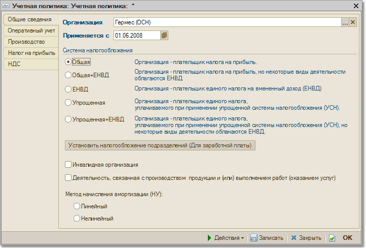
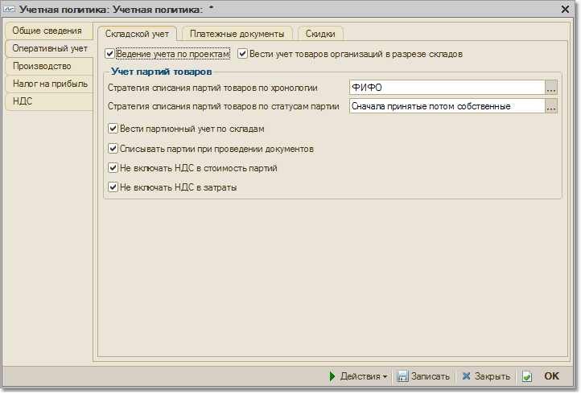
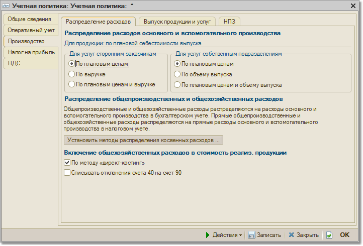

Регистр сведений «Учетная политика»
Регистр предназначен для хранения сведений об учетной политике организации.
Закладка "Общие сведения"

- Организация -
организация, для которой определяется учетная политика
- Применяется с - дата, с которой вступают в силу данные настройки учетной политики.
- Система налогообложения - выбор системы налогообложения, применяемой в организации.
- Инвалидная организация - флаг устанавливается, если организация попадает в разряд инвалидных.
- Деятельность, связанная с производством продукции и/или выполнением работ (оказанием услуг) - при установке отметки
- Метод начисления амортизации (НУ) - выбор метода начисления амортизации по налоговому учету. При установленной отметке метод будет автоматически заполняться в документах принятия ОС к учету.
Закладка "Оперативный учет"

Складской учет
Ведение учета по проектам - при установленном флажке появится возможность дополнительного разделения документооборота (в т.ч. учета затрат) по проектам.
Вести учет товаров организаций в разрезе складов - при установке флажка товары будут учитываться в разрезе складов.
Стратегия списания партий товаров по хронологии - выбор стратегии списания из возможных вариантов: FIFO, LIFO и "по средней".
Стратегия списания партий товаров по статусам партий - выбор стратегии определяет порядок списания при наличии товаров, принятых на комиссию.
Вести партионный учет по складам - при установке флажка подключается партионный учет по складам. Это означает, что себестоимость каждой партии будет рассчитана отдельно для каждого склада.
Списывать партии при проведении документов - если флаг установлен, будет производиться автоматическое списание партий при проведении документов реализации и выбытия товаров. Если флаг не установлен, необходимо будет выполнять списание партий при помощи обработки "Проведение по партиям".
Не включать НДС в стоимость партий - от установки флажка зависит, будет ли НДС включаться в себестоимость партий при списании (реализации).
Не включать НДС в затраты - от установки флажка зависит, будут ли суммы НДС включены в затраты.
Платежные документы
При совпадении даты регистрации документа и даты его оплаты проводить: по времени регистрации документа/по концу дня регистрации документа.
Параметр АВС-классификации покупателей - выбор параметра, по анализу которого покупатель будет отнесен к той или иной категории. Классификация покупателей осуществляется при помощи документа "ABC-классификация покупателей".
Параметр распределения покупателей по стадиям взаимоотношений - параметр, влияющий на отнесение покупателей к той или иной группе.
Скидки
От установки флагов на данной закладке зависит, будет ли организация иметь возможность применять те или иные скидки:
- Использовать скидки по количеству товара
- возможность использования скидок в зависимости от количества купленного товара
- Использовать скидки по сумме документа - возможность применения скидок в зависимости от суммы реализации
- Использовать скидки по виду оплаты - применение скидок в зависимости от вида оплаты (например, при наличной и безналичной оплате)
- Использовать скидки по дисконтной карте - возможность использования скидок по дисконтным картам. При установке данного флажка появляется возможность использования накопительных скидок по дисконтным картам.
- Использовать накопительные скидки по дисконтным картам - использование накопительных скидок по дисконтым картам
- Способ использования накопительных скидок - скидки могут накапливаться по дисконтной карте либо по владельцу дисконтной карты.
- Периодичность расчета накопительных скидок - установка периода пересчета процента накопительных скидок по дисконтным картам.
Закладка "Производство"

На этой закладке указываются элементы учета производственных расходов для бухгалтерского и налогового учета.
Распределение расходов
На закладке "Распределение расходов" устанавливается порядок распределения расходов основного и вспомогательного производства на себестоимость выпуска готовой продукции, работ и услуг.
Для выпущенной продукции, работ и услуг, оказанных сторонним заказчикам и собственным производственным подразделениям, проводится автоматический расчет себестоимости продукции.
Производственные расходы целиком относятся на себестоимость выпущенной продукции, если в подразделении выпускается одна номенклатурная позиция каждого вида (каждой номенклатурной группы). Если выпускается несколько номенклатурных позиций одного вида, то отнесение производственных расходов на себестоимость продукции проводится пропорционально плановым ценам ее выпуска.
- Для услуг сторонним заказчикам
Производственные расходы относятся на себестоимость услуг, оказанных сторонним заказчикам, аналогично выпущенной продукции, если указан способ "По плановой себестоимости выпуска".
Производственные расходы всех подразделений целиком относятся на себестоимость услуг, оказанных сторонним заказчикам, если указан способ "По выручке", и расходы, и выручка отнесены на одну номенклатурную группу. В таких случаях поддерживается только одноэтапное производство.
- Для услуг собственным подразделениям
Производственные расходы относятся на себестоимость услуг, оказанных собственным подразделениям, аналогично выпущенной продукции, если указан способ "По плановой себестоимости выпуска".
Если услуга одного вида оказывается нескольким собственным подразделениям и измеряется в специальных показателях (кв.метрах, куб.метрах, кило Джоулях), то отнесение производственных расходов на себестоимость услуги проводится пропорционально этим специальным показателям, если указан способ "По объему выпуска".
- Установить методы распределения производственных расходов - по кнопке вызывается справочник "Методы распределения общепроизводственных и общехозяйственных расходов".
- Используется метод "директ-костинг" - флаг устанавливается для включения общехозяйственных расходов в себестоимость реализованной продукции, услуг и работ. Если флаг не установлен, то общехозяйственные расходы включаются в себестоимость выпущенной продукции, услуг и работ;
- Списывать отклонения счета 40 на счет 90 - при установленном флаге отклонения от плановой стоимости при закрытии периода будут списаны на счет 90.
Выпуск продукции и услуг
Выпуск продукции, работ и услуг может учитываться на счете 40 "Выпуск продукции (работ, услуг)". Тогда при проведении документов "Выпуск готовой продукции" должна создаваться проводка с кредита счета 40 в дебет счета 43 "Готовая продукция" по плановой стоимости выпуска. Проводка с кредита счета учета расходов основного и вспомогательного производства в дебет счета 40 по фактической стоимости выпуска (корректировка себестоимости) создается при закрытии месяца.
- Последовательность переделов -
устанавливается способ определения порядка производственных переделов. Поддерживается ручной способ указания порядка переделов, в таком режиме возможен учет выпуска с использованием счета 40, и автоматический способ. При применении автоматического способа первым переделом считаются такие комбинации счетов учета затрат, подразделений и номенклатурных групп, на затраты которых относились только те активы и обязательства, которые не производились в закрываемом месяце. Вторым переделом считаются такие комбинации, на затраты которых были списаны активы и обязательства, произведенные на первом переделе и т.д.
НЗП
На данной закладке определяется порядок учета незавершенного производства.
- С использованием документа "Инвентаризация НЗП"
- при установленном переключателе для учета затрат НЗП для списания затрат необходимо будет создавать документы "Инвентаризация НЗП" в конце периода
- При отсутствии выпуска прямые расходы считать расходами НЗП - при установленном переключателе при отсутствии выпуска продукции, полуфабрикатов и оказания услуг прямые расходы и начальные остатки НЗП будут считаться конечными остаткмаи НЗП.
Закладка "Налог на прибыль"
Закладка заполняется, если организация ведет деятельность, доходы и расходы по которой учитываются для исчисления налоговой базы по налогу на прибыль. На закладке указываются следующие сведения:
- Указывается перечень прямых расходов.
- Устанавливаются ставки налога на прибыль.
- Применяется ПБУ 18/02 "Учет расчетов по налогу на прибыль" - не устанавливается для субъектов малого предпринимательства, имеющих право не применять это ПБУ. Автоматический учет требований ПБУ 18/02 определяет:
- сопоставление данных в оценке стоимости активов и обязательств по БУ и по НУ и отражение разниц в проводках по счетам плана счетов по налогу на прибыль по виду учета "ПР" и "ВР";
- расчет постоянных налоговых активов и обязательств, отложенных налоговых активов и обязательств при закрытии периода с помощью документа "Закрытие месяца".
Закладка "НДС"
Организация не является плательщиком НДС - при установленном флаге отключается ведение учета по регистрам НДС.
Момент определения налоговой базы НДС - по отгрузке
Начислять НДС по отгрузке без перехода права собственности
Наличие операций без НДС или с НДС 0% - флаг устанавливается, если у организации осуществляются как операции, облагаемые НДС по "обычным" ставкам, так и операции, не облагаемые НДС, и/или операции, по которым применяется ставка НДС 0% (либо такие операции планируется осуществлять в обозримом будущем).
При вводе специальных налоговых режимов (ЕНВД) можно установить для организации учет ЕНВД в части розничной торговли ("Розничная торговля облагается ЕНВД") или в части оказываемых организацией услуг ("Организация является плательщиком ЕНВД").
Для целей НДС ведется отдельный партионный учет. Партионный учет может вестись с детализацией без учета серий и характеристик товаров. Расчет НДС может проводиться и с учетом детализированных данных по характеристикам и сериям товаров.
Закладка "ЕНВД"
Эта закладка отображается в форме настройки учетной политики налогового учета, если для организации установлен флаг "ЕНВД для отдельных видов деятельности". На закладке указываются следующие сведения:
- Розничная торговля облагается ЕНВД
- устанавливается для организаций, розничная торговля которых облагается ЕНВД.
- Через гиперссылку доступен список счетов бухгалтерского учета по деятельности, облагаемой ЕНВД.
Закладка "УСН"
Эта закладка отображается в форме настройки учетной политики налогового учета, если для фирмы выбрана упрощенная система налогообложения. На закладке указываются следующие сведения:
- Объект налогообложения УСН
: Доходы или Доходы, уменьшенные на величину расходов.
- Дата перехода на УСН - проставляется для организаций, переходящих с обычной системы налогообложения на упрощенную.
- Контроль положений переходного периода - проставляется для организаций, переходящих с обычной системы налогообложения на упрощенную.
- Сторнировать доходы при возврате авансов покупателю - определяет порядок отражения в книге учета доходов и расходов операции возврата аванса покупателю. Если флаг установлен, сумма возврата аванса отражается как сторно доходов, если флаг снят, то как расходы.